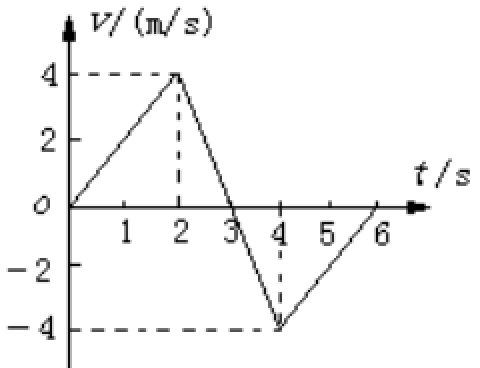

So whenever you make a measurement, you must know the uncertainty. Otherwise, it is meaningless. —— Walter Lewin
\[ \newcommand{\d}{\text{d}} \newcommand{\dx}{\d x} \newcommand{\dy}{\d y} \newcommand{\dz}{\d z} \newcommand{\dt}{\d t} \newcommand{\dv}{\d v} \newcommand{\b}{\boldsymbol} \newcommand{\bv}{\b v} \newcommand{\br}{\b r} \newcommand{\bx}{\b x} \newcommand{\ba}{\b a} \newcommand{\bi}{\b i} \newcommand{\bj}{\b j} \newcommand{\bk}{\b k} \newcommand{\g}{\text{g}} \]
一个物体相对于另一个物体的位置, 或者一个物体的某些部分相对于其他部分的位置, 随着时间而变化的过程, 称为机械运动(mechanical motion), 通常也简称为运动(motion).
物理学中所有的“运动”概念其实就是指“变化”, 而机械运动则是特指物体位置的变化.
由于物体是有一定的大小的, 因此一个物体在运动时, 其内部的各个点的运动状态可能是不同的, 并且运动过程中物体的大小和形状本身也可能发生变化, 这就给研究物体的运动带来了麻烦. 为此, 我们设想这样一个物理模型: 当物体的大小和形状对于研究目的可以忽略不计时, 仅仅将物体视为一个有质量的点, 这就是所谓的质点(particle/mass point). 在建立起质点的理想模型以后, (即使是相对于研究目的大小和形状不能忽略的)实际物体也可以被视作是无穷多个质点的集合从而得到解决. 因此质点是一个有效的建模尝试.
事实上任何理想模型(例如质点、点电荷、谐振动等等)都包含两个方面的含义在内: 一个是对实物的近似, 另一个是对实物的微分, 因此在解释理想模型的概念时, 可以从对实物的近似出发(实物可以被直接抽象, 和实验数据进行比较), 也可以从对实物的微分出发(将实物划分成小的元素, 研究这些元素之间的相互作用关系, 然后再积分起来, 如果和实验数据相符那么我们就认为这种微分是有效的). 在对于质点的叙述中, 我们采取了前面一种思路, 这是因为“物体的运动在某些时候可以忽略大小和形状”这种想法是自明的、和日常经验相符; 但在<<电磁学>>文档对于点电荷的叙述中, 我们采取了后一种思路, 这是因为我们并不知道带电体之间的相互作用到底是否和形状有关, 虽然你也可以说和实验数据比较然后相符, 但采用微分仍然是更严格的叙述方法.
万物都在运动当中, 不存在绝对静止的物体, 这就是运动本身的绝对性. 但通常我们需要研究的是物体与物体之间的运动关系, 这时候我们就可以将某一个物体视为是静止的, 然后研究另外的物体相对于这个物体是怎样运动的, 这时候我们视为静止的这个物体就称为参考系(reference frame).
选取不同的参考系时, 物体的运动状态可能是不同的, 这称为运动关系的相对性. 这也就告诉我们: 运动本身是绝对的, 但物体之间的运动关系是相对的.
以上都只是定性描述, 为了定量地描述物体相对于参考系的位置, 我们需要在参考系上建立坐标系. 当我们画出一个坐标系时, 实际上也就默认指定了参考系, 也就是说坐标系实际上是参考系的定量数学刻画. 常用的坐标系是直角坐标, 有时候出于研究的方便也可以选用一些其他坐标系.
\1. 径矢和位矢 路程
由参考系(或坐标原点)指向物体所在位置的矢量称为径矢.
在一个运动过程中, 由起点指向终点的有向线段所表示的矢量就称为这个运动的位矢(position vector)或位移().
径矢是一个状态量, 表征的是物体相对于参考系所在的位置, 而位矢则是一个过程量, 表征的是物体的位置变化. 因此径矢和位矢实际上有以下关系:
\[ \b{r}(t+\Delta t) - \b{r}(t) = \Delta \b{r} \]
式中\(\br(t)\)表示时\(t\)刻下物体的径矢, \(\Delta \br\)表示物体的位矢, 该式表明位矢等于径矢的变化量.
与位移相联系的一个概念是路程, 定义为物体所经过的实际运动轨迹的长度, 由此可知, 位移与物体的具体运动轨迹无关, 只与物体的始末位置有关, 而路程则与具体运动轨迹有关. 此外位移是矢量而路程是标量. 当且仅当物体作单向直线运动时, 位移的大小和路程相等.
为了刻画物体运动的快慢(位置的变化率), 我们将物体的位移\(\Delta r\)和它经过这段位移所花的时间\(\Delta t\)所得到的比值1定义为物体的速度(velocity):
\[ \bv = \frac{\Delta \br}{\Delta t} \] 注意到式中位移是矢量而时间是标量, 因此速度也是一个矢量, 并且和这段时间内位移的方向相同.
按照上面方法所定义的速度称为物体的平均速度(average velocity), 表征的是物体在一段时间内的运动快慢, 令\(\Delta t\rightarrow0\), 我们以位移对时间的微分表征物体在某一时刻(或某一位置)下的瞬时速度(instantaneous velocity):
\[ \bv = \lim_{\Delta t\rightarrow 0}\frac{\Delta\b r}{\Delta t} = \frac{\d\br}{\dt} \] 瞬时速度的大小称为瞬时速率(instantaneous speed). \[ \bv = \frac{\dx}{\dt}\bi + \frac{\dy}{\dt}\bj + \frac{\dz}{\dt}\bk = v_x\bi + v_y\bj + v_z\bk \]
另外我们以路程为基础定义平均速率(average speed): \[ v = \frac{\Delta s}{\Delta t} \] 注意到瞬时速率和平均速率完全是两个不同的概念. 瞬时速率不是平均速率的极限.
为了刻画速度的变化率, 我们定义一段时间内的平均加速度(average acceleration)
\[ \ba = \frac{\Delta \bv}{\Delta t} \] 令\(\Delta t\rightarrow0\)得到瞬时加速度(instantaneous acceleration):
\[ \ba = \lim_{\Delta t\rightarrow 0}\frac{\Delta \bv}{\Delta t} = \frac{\d\bv}{\dt} = \frac{\d^2\bx}{\dt^2} \] 因此瞬时加速度实际上就是速度对时间的微分, 位移对时间的二阶微分.
为什么我们定义到位移的二阶微分就不再定义新名词了呢? 加速度通过牛顿第二定律和力紧密相关, 因此给个名字是非常必要的, 而再往下就没有这种物理量的对应关系了, 三阶微分实践中使用“加速度的变化率”或“力的变化率”就可以满足需求.
对于典型的曲线运动——圆周运动, 我们引入一些新的描述手段.
线速度\(\bv\)的大小定义为物体所通过的弧长和所用时间的比值:
\[ \bv = \frac{\Delta l}{\Delta t} \] 也就是说, 线速度实际上是利用路程定义的, 更近似于平均速率的定义, 但在匀速圆周运动中, 上面定义的线速度大小实际上就是任意时刻的瞬时线速度大小, 在瞬时意义上, 其方向沿圆周的切线方向.
角速度\(\b\omega\)定义为半径转过的角度与所用时间的比值:
\[ \b\omega = \dfrac{\Delta\varphi}{\Delta{t}} \]
其单位为\(\text{rad}\cdot \text{s}^{-1}\). 角速度实际上也是一个矢量, 且方向垂直于物体作圆周运动所在的平面, 服从右手定则, 但是高中阶段不强调其矢量性, 因此在上式中我们没有将其加粗处理. 对于线速度和角速度我们有如下关系
\[ \bv = \b\omega r \]
匀速圆周运动是一种周期运动, 对于任何周期运动我们都存在周期\(T\)和频率的\(f\)的概念: 周期被定义为周期性运动每重复一次所需要的时间, 而频率则是单位时间内所重复的次数, 因此实际上\(f = \dfrac{1}{T}\). 频率的单位为\(\text{s}^{-1}\), 一般写成\(\text{Hz}\). 对于圆周运动, 我们有
\[ \bv = \frac{2\pi r}{T},~~~~ \b\omega = \frac{2\pi}{T} \] 由此我们可以得到线速度和角速度的关系(1).
上式中的\(1/T\)也可以用\(f\)替换得到 \[ \bv = 2\pi rf,~~~~ \b\omega = 2\pi f \]
向心加速度
由于数学手段的限制, 高中教材对匀速圆周运动中向心加速度的处理是直接给出其计算式:
\[ \ba = \frac{\bv^2}{r} = \b\omega^2r = \bv\b\omega \] 结合牛顿第二定律和向心加速度的表达式, 可以得到向心力公式
\[ \b F = m\frac{\bv^2}{r} = m\b\omega^2r = m\bv\b\omega \]
| 图像信息 | 实际意义 |
|---|---|
| 图像上的点 | 此时刻的瞬时速度 |
| 速度轴上的截距 | 初速度 |
| 割线(切线)斜率 | 这一段时间内平均加速度(此时刻的瞬时加速度) |
| 对t积分(代数和) | 物体位移大小 |
| 面积的算术和 | 运动路程 |
| 一段射线远离(靠近)时间轴 | 物体做加速(减速)运动 |
例题1 某物体沿一直线运动, 其v—t图象如图所示, 则下列说法错误的是

A．第2s内和第3s内速度方向相反
B．第2s内和第3s内的加速度方向相反
C．第3s内速度方向与加速度方向相反
D．第5s内速度方向与加速度方向相反
第2s内和第3s内图像都在t轴同侧, 两段时间内任一时刻速度均为正, 则两段时间内运动方向应相同, A错; 第2s内直线斜率>0, 第3s内直线斜率<0, 因此加速度方向相反, B对; 第3s内图像靠近t轴, 做匀减速直线运动, 由定义知速度和加速度方向相反(或: 图像在t轴上方, 速度为正, 而斜率＜0, 加速度为负, 也可以得到速度和加速度方向相反), C对, 同理知D对. 因此我们选A.
加速度保持恒定的运动称为匀变速直线运动(motion with constant acceleration). 速度方向和加速度方向相同的称为匀加速直线运动, 相反的称为匀减速直线运动.
由加速度定义\(\d\bv = \ba \dt\), 两边积分有 \[ \int \d\bv = \int a\dt \\ v = v_0 + at \] 进一步地 \[ \int \dx = \int v\dt = \int (v_0 + at)\dt \\ x = x_0 + v_0t + \frac{1}{2}at^2 \] 综上 \[ \left\{\begin{array}{ll} a = a_0 \\ v = v_0 + at \\ x = x_0 + v_0t + \frac{1}{2}at^2 \end{array}\right. \] 即为匀变速直线运动的运动方程. 式中的\(v_0, x_0\)为积分常数, 其物理意义为物体在初始状态下的速度和位移. 注意到由于我们是在描述直线运动, 因此上述方程都被写作了标量形式.
上述方程是含有\(t\)的参数方程, 考虑\((t_1, x_1)\rightarrow(t_2, x_2)\)过程消去参数\(t\)有
\[ v^2 = v_0^2 + 2a(x - x_0) \] 上式刻画了物体速度变化和位移之间的关系.
令\(v_1=0\)可以得到速度从\(v\)到0的变化过程中的位移
\[ x = \frac{v^2}{2a} \]
时间中点和位移中点的速度
\[ v_{t/2} = \bar v = \frac{v_0 + v_t}{2}, ~~~~ v_{x/2} = \frac{\sqrt{v_0^2 + v_t^2}}{2} \] 由均值不等式链我们有\(v_{t/2}\le v_{x/2}\)恒成立. 即位移中点的速度总大于时间中点的速度, 当且仅当物体做匀速直线运动时等号成立. 二者差值为\(v_{x/2} - v_{t/2} = a^2t^2\)
\(v_0 = 0\)时的几个比例关系
当初速度为0时, 位移方程写作\(x = \dfrac{1}{2}at^2\), 是一个简单的二次函数, 有一些简单的比例关系:
\(1T\)末、\(2T\)末、\(3T\)末…\(nT\)末的速度比为 \[ 1:2:3:\ldots:n \] \(1T\)内、\(2T\)内、\(3T\)内…\(nT\)内的位移比为 \[ 1^2: 2^2: 3^2:\ldots: n^2 \] 第一个\(T\)内、第二个\(T\)内、第三个\(T\)内、…第\(n\)个\(T\)内的位移比为
\[ 1:3:5:\ldots:(2n-1) \] 通过连续相等的位移所用的时间比为 \[ 1:(\sqrt2-1):(\sqrt3-\sqrt2):\ldots:(\sqrt{n}-\sqrt{n-1}) \]
匀变速直线运动的可解性和可逆性
可解性: 在物体运动的每一个阶段上有五个主要物理量: \(v_0, v_t, a, s, t\), 只要已知其中任意三个即可解出另外两个.
可逆性: 由于物体运动条件的不同, 解题时可进行逆向转换.
自由落体运动是一种特殊的匀变速直线运动, 当我们将物体在高处静止释放(意味着初速度为零), 忽略空气阻力, 认为物体只在重力作用下下落时, 称物体做自由落体运动. 取向下方向为正方向, 此时的运动方程为
\[ h(t) = \frac{1}{2}\g t^2 \] 式中的\(\g\)称为重力加速度(gravity acceleration), 在同一位置, 任何物体重力加速度都是一样的, 对于其来源和意义我们将在动力学的万有引力部分讨论.
上式的另外一个常用形式是在给定高度\(h\)下计算物体下落的时间:
\[ h = \frac{\sqrt{2h}}{\g} \] 另外, 在自由落体的基础上, 如果我们给物体一个竖直方向上的初速度, 根据初速度方向的不同, 就会得到竖直上抛运动和竖直下抛运动, 它们也是特殊的匀变速直线运动.
在竖直上抛的运动过程中, 有一个从抛出时速度降到最高点处速度为0的过程, 可以根据上面的(4)式计算出抛出点到最高点的位移:
\[ h = \frac{v_0^2}{2\g} \] 从抛出点到达最高点的时间为
\[ t = \frac{v_0}{\g} \] 注意到上抛和回落过程的对称性, 回到抛出点的时间则为\(2t\).
抛体运动可以分为平抛运动和斜抛运动两类. 我们在这一节介绍平抛运动有关形式, 在下一节介绍斜抛运动有关性质.
在自由落体的基础上, 如果我们给物体一个水平方向的初速度, 那么物体在落地前将做平抛运动, 可以分为两个子运动处理: 竖直方向上的自由落体, 和水平方向上的匀速直线运动, 二者的合运动将在空中划出一条抛物线的一侧.
两个方向上的运动学方程(以\(t\)为参数的参数方程)为
\[ \left\{\begin{array}{ll} v_x = v_0 & \\ v_y = \g t \end{array}\right. \left\{\begin{array}{ll} x = v_0t & \\ h = \dfrac{1}{2}\g t^2 \end{array}\right. \] 两个方向的位移方程以参数t紧密联系. 从中消去t可以得到二次函数形式的普通方程(以\(x\)表示\(h\)):
\[ y = \frac{\g}{2v_0^2}x^2 \] 另一方面, 以\(h\)表示\(x\)的形式则通常用于计算给定高度下平抛运动的射程: \[ x_{\max} = v_0\sqrt{\frac{2h}{\g}} \]
斜抛运动在自由落体的基础上给了物体一个斜向(实际上就是一个竖直一个水平)上的初速度, 可以分解为竖直方向上的竖直上抛运动和水平方向上的匀速直线运动, 设抛出速度与水平方向的夹角为\(\theta\), 取向上方向为正方向, 则运动学方程写作
\[ \left\{\begin{array}{ll} v_x = v_0\cos\theta & \\ v_y = v_0\sin\theta - \g t \end{array}\right. \left\{\begin{array}{ll} x = v_0t\cos\theta \\ h = v_0t\sin\theta - \dfrac{1}{2}\g t^2 \end{array}\right. \] 从两个方向的位移方程中消去t后得到轨迹表达式
\[ y = -\frac{\g}{2v_0^2\cos^2\theta}x^2 + x\tan\theta \] 斜抛运动的竖直上抛分量的运动性质, 可以参考上面的第2小节得到:
斜抛的射高
\[ h = \frac{v_0^2\sin^2\theta}{2\g} \] 到达最高点的运动时间
\[ t = \frac{v_0\sin\theta}{\g} \] 回到抛出水平面的运动时间为\(2t\).
因此射程(这是竖直上抛运动所没有的, 加上水平分量后才有的性质)为
\[ x = \frac{2v_0\sin\theta}{\g}v_0\cos\theta = \frac{v_0^2\sin2\theta}{\g} \] 注意到射程公式中, 由于\(\sin2\theta\)在\(\theta=\pi/4\)两侧是对称的, 并且在这一点处取得的最大值1, 因此当\(\theta=\pi/4\)时
\[ x_\max = \frac{v_0^2}{\g} \] 并且互余的角度的射程相等.
注意到目前的教材都已经废弃了物理量定义的“单位时间/质量/…”描述, 而转而用“比值”描述定义.↩︎